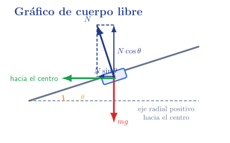

1. Introducción contextualizada
La cinemática describe cómo se mueve un cuerpo; la dinámica estudia por qué cambia o no cambia su movimiento. En una planta alimentaria, esto aparece al analizar una cinta que arranca, un envase que se desplaza sin caer, una rampa de descarga, una tapa que debe mantenerse abierta, un motor de mezclador o un eje que transmite torque.
2. Objetivos de aprendizaje
Comprender fuerzas
Identificar fuerzas como vectores con módulo, dirección, sentido y punto de aplicación.
Aplicar Newton
Usar las leyes de Newton para interpretar reposo, movimiento uniforme y aceleración.
Dibujar DCL
Construir diagramas de partícula y de cuerpo libre.
Analizar rozamiento
Distinguir rozamiento útil, no deseado, estático y cinético.
Calcular torque
Estudiar momentos de fuerzas y equilibrio rotacional.
3. Importancia técnica
El técnico en alimentos necesita interpretar condiciones mecánicas de operación: aceleración de cintas, adherencia de envases, fuerzas sobre rampas, cargas suspendidas, torque requerido por mezcladores y esfuerzos sobre tapas o compuertas.
4. Mapa conceptual
5. Fuerzas e interacciones
En física, una fuerza no se interpreta como algo aislado: es una interacción mutua entre dos cuerpos, o entre un cuerpo y su entorno. En lenguaje cotidiano puede imaginarse como un empuje o una tracción, pero en dinámica se representa como una acción vectorial que un cuerpo ejerce sobre otro.
Una fuerza puede producir efectos observables: cambiar el estado de movimiento de un cuerpo —acelerarlo, frenarlo o cambiar su dirección—, deformarlo o generar tendencia al giro si actúa a cierta distancia de un eje. Por eso, en un análisis dinámico siempre conviene nombrar la fuerza indicando quién la ejerce y sobre qué sistema actúa: por ejemplo, “fuerza de la cinta sobre el envase” o “fuerza del cable sobre la tapa”.
![Fuerza como vector]()
Exportación sugerida. Guardar el código como
assets/tex/fuerza_vector.tex y exportar a assets/tikz/fuerza_vector.svg.Ver código TikZ del diagrama
\documentclass[tikz,border=7pt]{standalone}
\usepackage[utf8]{inputenc}
\usepackage[T1]{fontenc}
\usepackage{amsmath}
\usepackage{xcolor}
\usetikzlibrary{arrows.meta,calc,angles,quotes,patterns,positioning}
\definecolor{brand}{HTML}{1E3A8A}
\definecolor{brandtwo}{HTML}{2563EB}
\definecolor{accentred}{HTML}{EF4444}
\definecolor{accentgreen}{HTML}{16A34A}
\definecolor{accentorange}{HTML}{F59E0B}
\definecolor{muted}{HTML}{64748B}
\definecolor{lightblue}{HTML}{EEF6FF}
\tikzset{force/.style={-{Latex[length=3mm]}, line width=1.15pt}, axis/.style={-{Latex[length=2mm]}, line width=.8pt, color=muted}, body/.style={draw=brandtwo, fill=lightblue, line width=1pt, rounded corners=2pt}, lab/.style={font=\small, text=brand}, sml/.style={font=\scriptsize, text=muted}}
\begin{document}
\begin{tikzpicture}[scale=1]
\draw[axis] (-.3,0)--(5,0) node[right] {$x$}; \draw[axis] (0,-.3)--(0,3.4) node[above] {$y$};
\fill[brand] (1,.7) circle (2pt) node[below left, text=brand] {punto};
\draw[force, color=brandtwo] (1,.7)--(4.2,2.8) node[midway,above,sloped] {$\vec F$};
\draw[dashed, color=accentred, line width=1pt] (1,.7)--(4.2,.7) node[midway,below] {$F_x$};
\draw[dashed, color=accentgreen, line width=1pt] (4.2,.7)--(4.2,2.8) node[midway,right] {$F_y$};
\draw[accentorange, line width=1pt] (1.7,.7) arc[start angle=0,end angle=33,radius=.7]; \node[text=accentorange] at (1.9,.98) {$\theta$};
\node[align=center, lab] at (2.6,3.35) {módulo, dirección y sentido};
\end{tikzpicture}
\end{document}5.1 Tipos de fuerzas frecuentes según el modo de interacción
Una clasificación útil para construir diagramas de cuerpo libre es distinguir entre fuerzas de contacto y fuerzas a distancia. Las fuerzas de contacto aparecen cuando el sistema analizado toca otro cuerpo, superficie, cable o fluido. Las fuerzas a distancia actúan sin contacto directo.
Fuerzas de contacto
- Fuerza aplicada \(\vec{F}\): empuje o tracción ejercida directamente sobre el sistema.
- Tensión \(\vec{T}\): fuerza transmitida por cable, cuerda, cadena o banda.
- Normal \(\vec{N}\): fuerza perpendicular ejercida por una superficie de apoyo.
- Rozamiento o roce \(\vec{f}\): fuerza tangencial asociada al contacto con una superficie; se opone al deslizamiento relativo o a su tendencia.
Fuerzas a distancia
- Fuerza de atracción gravitatoria \(\vec{F}_g\): interacción entre cuerpos con masa.
- Fuerzas eléctricas: interacción entre cargas eléctricas.
- Fuerzas magnéticas: interacción asociada a imanes, corrientes eléctricas o campos magnéticos.
- Fuerzas nucleares fuerte y débil: interacciones fundamentales de muy corto alcance, propias del núcleo atómico y de ciertos procesos subatómicos.
| Fuerza | Tipo | Símbolo | Origen físico | Ejemplo alimentario |
|---|---|---|---|---|
| Fuerza aplicada | Contacto | \(\vec{F}\) | Empuje o tracción directa. | Actuador que desplaza una guía o empuja envases. |
| Tensión | Contacto | \(\vec{T}\) | Cable, cuerda, cadena o banda. | Izaje de bandeja, tapa suspendida o pequeño soporte. |
| Normal | Contacto | \(\vec{N}\) | Reacción perpendicular de una superficie. | Producto apoyado sobre cinta o rampa. |
| Rozamiento o roce | Contacto | \(\vec{f}\) | Interacción tangencial entre superficies. | Adherencia entre envase y banda transportadora. |
| Atracción gravitatoria | A distancia | \(\vec{F}_g\) | Interacción entre masas. | Peso de envases, tapas, tolvas, cargas y productos. |
| Eléctrica | A distancia | \(\vec{F}_e\) | Interacción entre cargas eléctricas. | Fenómenos electrostáticos en polvos, films o envases plásticos. |
| Magnética | A distancia | \(\vec{F}_m\) | Interacción con campos magnéticos. | Detectores de metales, separadores magnéticos y actuadores. |
| Nuclear fuerte | A distancia / fundamental de muy corto alcance | — | Mantiene unidos protones y neutrones en el núcleo atómico. | No se usa en diagramas de cuerpo libre macroscópicos; se menciona como interacción fundamental de la materia. |
| Nuclear débil | A distancia / fundamental de muy corto alcance | — | Interviene en ciertos procesos subatómicos y transformaciones nucleares. | Relevante para cultura científica y física moderna, no para el cálculo mecánico de cintas, tolvas o mezcladores. |
5.2 Fuerza de atracción gravitatoria
La fuerza de atracción gravitatoria es una interacción a distancia entre cuerpos con masa. De acuerdo con la ley de gravitación universal, cada cuerpo atrae al otro con fuerzas de igual módulo y sentidos opuestos, dirigidas sobre la línea que une sus centros. En la escala de una planta alimentaria, esta interacción se observa principalmente como el peso de envases, materias primas, tapas, tolvas, bandejas y piezas mecánicas.
| Símbolo | Significado físico | Unidad SI |
|---|---|---|
| \(F_g\) | Módulo de la fuerza gravitatoria entre los cuerpos. | newton, N |
| \(G\) | Constante de gravitación universal. | \(\mathrm{N\,m^2/kg^2}\) |
| \(m_1\) | Masa del cuerpo 1. Para peso terrestre suele tomarse como la masa de la Tierra, \(M_T\). | kg |
| \(m_2\) | Masa del cuerpo 2. En planta puede ser un envase, producto, bandeja, tapa o carga. | kg |
| \(r\) | Distancia entre los centros de masa de ambos cuerpos. Cerca de la Tierra, \(r\approx R_T\). | m |
5.2.1 Dirección y sentido de la fuerza gravitatoria
La fuerza gravitatoria es siempre atractiva. Si \(\hat r_{12}\) es el versor que apunta desde el cuerpo 1 hacia el cuerpo 2, entonces la fuerza que el cuerpo 1 ejerce sobre el cuerpo 2 apunta en sentido contrario a ese versor, porque el cuerpo 2 es atraído hacia el cuerpo 1:
En problemas cerca de la superficie terrestre, si se elige el eje vertical \(y\) positivo hacia arriba, muchas bibliografías escriben el versor vertical como \(\hat{\jmath}\). Con esa convención, la gravedad apunta hacia abajo:
5.2.2 De la ley universal al valor de \(g\) cerca de la Tierra
Para un cuerpo de masa \(m\) cerca de la superficie terrestre, se toma \(m_1=M_T\), la masa de la Tierra, \(m_2=m\), la masa del cuerpo, y \(r\approx R_T\), el radio medio terrestre. La magnitud de la fuerza gravitatoria resulta:
Pero cerca de la superficie terrestre esa misma fuerza se denomina peso y se escribe:
Como \(P\) y \(F_g\) representan la misma interacción física en este caso:
Al simplificar la masa del cuerpo \(m\), queda:
5.2.3 Variación de \(g\) con la distancia
Si el cuerpo no está exactamente sobre la superficie, sino a una altura \(h\), la distancia al centro de la Tierra no es \(R_T\), sino:
La figura siguiente ayuda a visualizar esa disminución desde la superficie terrestre hasta la distancia media a la Luna. Se incluye además la posición aproximada de la Estación Espacial Internacional (EEI), para destacar que incluso a unos pocos cientos de kilómetros de altura el valor de \(g\) sigue siendo elevado.
| Posición de referencia | Distancia al centro de la Tierra | Altura sobre la superficie | Valor aproximado de \(g\) |
|---|---|---|---|
| Superficie terrestre | \(r=R_T\approx 6{,}38\times10^3\,\mathrm{km}\) | \(h=0\) | \(g\approx 9{,}80\,\mathrm{m/s^2}\) |
| Cima del Monte Everest | \(r\approx 6{,}389\times10^3\,\mathrm{km}\) | \(h\approx 8{,}85\,\mathrm{km}\) | \(g\approx 9{,}77\,\mathrm{m/s^2}\) |
| EEI / ISS | \(r\approx 6{,}79\times10^3\,\mathrm{km}\) | \(h\approx 408\,\mathrm{km}\) | \(g\approx 8.66\,\mathrm{m/s^2}\) |
| Distancia media a la Luna | \(r\approx 3{,}844\times10^5\,\mathrm{km}\) | \(h\approx 3{,}780\times10^5\,\mathrm{km}\) | \(g\approx 0.0027\,\mathrm{m/s^2}\) |
5.2.4 Peso en el Sistema Internacional y en el sistema técnico
En el Sistema Internacional (SI), el peso es una fuerza y por lo tanto se expresa en newton \(\mathrm{N}\). De acuerdo con la relación \(P=mg\), un cuerpo de masa \(1\,\mathrm{kg}\) tiene, cerca de la superficie terrestre, un peso aproximado de \(9{,}8\,\mathrm{N}\).
En el llamado sistema técnico, muy difundido en el uso cotidiano y en documentación antigua de ingeniería, aparece la unidad kilogramo-fuerza \(\mathrm{kgf}\), también llamada a veces kilopond \(\mathrm{kp}\). Esta unidad representa el peso de una masa de \(1\,\mathrm{kg}\) sometida a la gravedad normal.
| Magnitud | Sistema Internacional | Sistema técnico / uso frecuente | Comentario didáctico |
|---|---|---|---|
| Peso de un cuerpo | Se expresa en \(\mathrm{N}\) | Puede expresarse en \(\mathrm{kgf}\) | Ambas unidades refieren a fuerza, no a masa. |
| Cuerpo de masa \(1\,\mathrm{kg}\) | \(P\approx 9{,}8\,\mathrm{N}\) | \(P\approx 1\,\mathrm{kgf}\) | La equivalencia es aproximada en problemas introductorios. |
| Cuerpo de masa \(10\,\mathrm{kg}\) | \(P\approx 98\,\mathrm{N}\) | \(P\approx 10\,\mathrm{kgf}\) | Útil para interpretar catálogos, balanzas y documentación técnica antigua. |
6. Leyes de Newton
Una vez identificadas las fuerzas que actúan sobre el sistema, las leyes de Newton permiten relacionar esas fuerzas con el estado de movimiento o equilibrio. En esta unidad se usarán en sistemas de referencia aproximadamente inerciales, como el piso de una planta industrial o una mesa de laboratorio en reposo respecto de la Tierra.
6.1 Primera ley de Newton: ley de inercia
Redacción según las fuentes. Un cuerpo permanece en estado de reposo o de movimiento rectilíneo uniforme mientras no actúe sobre él una fuerza externa neta no equilibrada. En forma operacional, si la suma vectorial de las fuerzas externas que actúan sobre el cuerpo es nula, la aceleración es nula y su velocidad permanece constante.
Marco inercial y marco no inercial. Un marco de referencia inercial es aquel en el que se verifica la ley de inercia: si \(\sum \vec{F}=\vec 0\), entonces \(\vec{a}=\vec 0\). Un marco acelerado linealmente o un marco en rotación no cumple esa condición en forma directa. Para describir el movimiento desde esos marcos se introducen fuerzas ficticias o fuerzas inerciales, que no provienen de una interacción física con otro cuerpo, sino de la aceleración del sistema de referencia elegido.
| Tipo de sistema de referencia | Descripción | ¿Se aplica directamente la primera ley? | Ejemplo didáctico |
|---|---|---|---|
| Inercial | Está en reposo o se mueve con velocidad constante respecto de otro marco inercial. | Sí. Si la fuerza neta es cero, la aceleración es cero. | Piso del laboratorio o planta, considerado aproximadamente inercial. |
| No inercial lineal | Acelera en línea recta respecto del suelo. | No directamente. | Vehículo que acelera con un péndulo colgado del techo. |
| No inercial rotacional | Gira respecto de un marco inercial. | No directamente. | Plataforma giratoria desde la perspectiva de los jugadores. |
Ampliación del concepto de inercia. La inercia es la propiedad de los cuerpos por la cual tienden a conservar su estado de movimiento. Si están en reposo, tienden a permanecer en reposo; si ya se mueven, tienden a seguir moviéndose en línea recta y con velocidad constante. La inercia no es una fuerza: no se dibuja como una flecha en el diagrama de cuerpo libre. Es una propiedad del cuerpo que se manifiesta como resistencia a cambiar la velocidad.
La cantidad física que permite comparar la inercia de distintos cuerpos es la masa. Un cuerpo de mayor masa requiere una fuerza neta mayor para lograr la misma aceleración que otro de menor masa. Por ejemplo, no cuesta lo mismo acelerar o frenar una bandeja vacía que una bandeja cargada con producto, aunque ambas estén sobre la misma cinta transportadora.
Interpretación física. En situaciones reales suele haber rozamiento, resistencia del aire, vibraciones o contacto con guías. Por eso muchos cuerpos se detienen. Pero no se detienen “porque se les acabó la fuerza de movimiento”, sino porque aparece una fuerza neta opuesta al movimiento. El modelo ideal sin rozamiento permite comprender que el movimiento uniforme no necesita una fuerza neta para sostenerse; necesita fuerza neta solamente para cambiar.
6.1.1 Ejemplo lineal: péndulo en un vehículo acelerado
Considérese un péndulo colgado del techo de un vehículo. Si el vehículo se mueve con velocidad constante, el observador del vehículo puede considerarse aproximadamente inercial y el péndulo cuelga verticalmente en reposo relativo. Pero si el vehículo acelera hacia la derecha, el marco del vehículo deja de ser inercial. El péndulo se inclina hacia atrás: desde el vehículo parece actuar una fuerza horizontal adicional. Esa fuerza no es real; es una fuerza ficticia asociada al sistema de referencia acelerado.
Sistema inercialDesde el observador inercial externo: fuerzas reales y punto de suspensión acelerado
El observador externo ve que el vehículo acelera y que el punto de suspensión arrastra al péndulo. Sobre la masa del péndulo actúan fuerzas reales: el peso \(\vec{P}\) y la tensión \(\vec{T}\). No se incorpora una fuerza horizontal real hacia atrás.
Mostrar/ocultar controles
Sistema no inercialDesde el observador dentro del vehículo: equilibrio aparente y fuerza ficticia
Para la persona que viaja dentro del vehículo, el techo parece estar quieto y el péndulo queda inclinado hacia el lado opuesto a la aceleración. Para describir esta observación desde el marco acelerado se introduce \(\vec{F}_f=-m\vec{a}_{veh}\).
Mostrar/ocultar controles
6.1.2 Ejemplo rotacional: pelota lanzada en una plataforma giratoria
Considérese una plataforma circular que gira con velocidad angular constante. Dos personas están sentadas en extremos opuestos y se lanzan una pelota. Una vez liberada la pelota, si se desprecia el rozamiento horizontal, en el marco inercial externo la pelota continúa con movimiento rectilíneo uniforme. Sin embargo, para quienes giran con la plataforma, la pelota parece desviarse de la trayectoria directa entre ambos jugadores.
Sistema inercialDesde el observador inercial externo: trayectoria rectilínea de la pelota
El observador externo ve que la pelota, una vez liberada, conserva su velocidad horizontal y sigue una recta. La plataforma gira debajo de ella. Esta lectura es coherente con la primera ley: si la fuerza horizontal neta sobre la pelota es nula, su velocidad horizontal permanece constante.
Mostrar/ocultar controles
Sistema no inercialDesde el observador que gira con la plataforma: desviación aparente
Para quienes están sobre la plataforma, los jugadores parecen estar fijos, pero la pelota no sigue la línea directa esperada. El marco rotante es no inercial. Para describir el movimiento desde ese marco se introducen fuerzas ficticias, como la centrífuga y la de Coriolis.
Mostrar/ocultar controles
6.2 Segunda ley de Newton: relación entre fuerza neta, masa y aceleración
Redacción según las fuentes. Si sobre un cuerpo actúa una fuerza externa neta, el cuerpo adquiere una aceleración en la misma dirección y sentido que esa fuerza neta. La aceleración es directamente proporcional a la fuerza neta e inversamente proporcional a la masa del cuerpo.
Interpretación física. La segunda ley permite cuantificar el cambio de movimiento. No se aplica a una fuerza aislada sino a la fuerza neta, es decir, a la suma vectorial de todas las fuerzas externas que actúan sobre el sistema. Puede haber muchas fuerzas sobre un cuerpo, pero el cuerpo tiene una sola aceleración resultante.
La masa cumple el papel de medida de la inercia: para una misma fuerza neta, un cuerpo de mayor masa acelera menos. Para una misma masa, si se duplica la fuerza neta, se duplica la aceleración. La unidad SI de fuerza es el newton:
6.3 Tercera ley de Newton: interacción entre cuerpos
Redacción según las fuentes. Cuando un cuerpo A ejerce una fuerza sobre un cuerpo B, el cuerpo B ejerce simultáneamente sobre A una fuerza de igual magnitud y dirección opuesta. Estas dos fuerzas forman un par acción-reacción.
Interpretación física. Las fuerzas siempre aparecen como interacciones entre cuerpos. No existe una fuerza aislada: si la cinta empuja al envase hacia adelante, el envase empuja a la cinta hacia atrás; si una paleta de mezclador empuja al fluido, el fluido ejerce una fuerza resistente sobre la paleta. Estas fuerzas no se anulan entre sí porque no actúan sobre el mismo cuerpo.
![Interacción entre dos cuerpos]()
Exportación sugerida. Guardar el código como
assets/tex/tercera_ley.tex y exportar a assets/tikz/tercera_ley.svg.Ver código TikZ del diagrama
\documentclass[tikz,border=7pt]{standalone}
\usepackage[utf8]{inputenc}
\usepackage[T1]{fontenc}
\usepackage{amsmath}
\usepackage{xcolor}
\usetikzlibrary{arrows.meta,calc,angles,quotes,patterns,positioning}
\definecolor{brand}{HTML}{1E3A8A}
\definecolor{brandtwo}{HTML}{2563EB}
\definecolor{accentred}{HTML}{EF4444}
\definecolor{accentgreen}{HTML}{16A34A}
\definecolor{accentorange}{HTML}{F59E0B}
\definecolor{muted}{HTML}{64748B}
\definecolor{lightblue}{HTML}{EEF6FF}
\tikzset{force/.style={-{Latex[length=3mm]}, line width=1.15pt}, axis/.style={-{Latex[length=2mm]}, line width=.8pt, color=muted}, body/.style={draw=brandtwo, fill=lightblue, line width=1pt, rounded corners=2pt}, lab/.style={font=\small, text=brand}, sml/.style={font=\scriptsize, text=muted}}
\begin{document}
\begin{tikzpicture}[scale=1]
\draw[body] (0,0) rectangle (1.7,1.2); \draw[body] (4.1,0) rectangle (5.8,1.2);
\node[text=brand] at (.85,.6) {A}; \node[text=brand] at (4.95,.6) {B};
\draw[force, color=accentred] (1.7,.8)--(3.5,.8) node[midway,above] {$\vec F_{A\to B}$};
\draw[force, color=accentgreen] (4.1,.4)--(2.3,.4) node[midway,below] {$\vec F_{B\to A}$};
\draw[thick, color=muted] (-.4,-.1)--(6.2,-.1);
\node[lab, align=center] at (2.9,1.75) {misma magnitud y dirección\\sentidos opuestos};
\node[sml] at (2.9,-.55) {$\vec F_{A\to B}=-\vec F_{B\to A}$};
\end{tikzpicture}
\end{document}7. Hipótesis simplificativas y modelos
En dinámica no se intenta reproducir toda la complejidad del sistema real desde el primer paso. Se construye un modelo físico: una representación simplificada que conserva lo esencial del fenómeno y descarta efectos secundarios. Esta decisión debe declararse porque define qué ecuaciones son válidas y qué resultados pueden esperarse.
7.1 Hipótesis de Tierra plana y gravedad uniforme
Para problemas de laboratorio, equipos de planta, cintas transportadoras, rampas, tolvas, tapas y sistemas de izaje, las dimensiones del sistema son muy pequeñas comparadas con el radio terrestre. Por eso se usa el modelo local de Tierra plana: la superficie se representa como un plano horizontal y la vertical se toma como una dirección única para todo el problema.
Con esta hipótesis, el vector aceleración gravitatoria se considera constante, de módulo \(g\approx 9{,}8\,\mathrm{m/s^2}\), y apuntando siempre hacia abajo. Si el eje \(y\) positivo se elige hacia arriba:
Esta simplificación ayuda al cálculo porque permite dibujar todos los pesos paralelos entre sí y resolver las fuerzas con ejes cartesianos fijos. En lugar de considerar que cada peso apunta exactamente hacia el centro de la Tierra, se considera que todos apuntan hacia abajo en la misma dirección local. Para equipos de unos metros, la diferencia angular entre esas direcciones es despreciable.
7.2 Modelo de cuerpo puntual y cuerpo rígido
Según el objetivo del problema, un objeto puede modelarse como partícula o como cuerpo rígido. Si sólo interesa la traslación, el objeto se representa como un punto material y todas las fuerzas externas se dibujan aplicadas en ese punto. Si interesa el giro, el brazo de palanca o el equilibrio rotacional, es necesario conservar la geometría del cuerpo y los puntos de aplicación de las fuerzas.
7.3 Modelo de partícula
![Diagrama de partícula]()
Exportación sugerida. Guardar el código como
assets/tex/diagrama_particula.tex y exportar a assets/tikz/diagrama_particula.svg.Ver código TikZ del diagrama
\documentclass[tikz,border=7pt]{standalone}
\usepackage[utf8]{inputenc}
\usepackage[T1]{fontenc}
\usepackage{amsmath}
\usepackage{xcolor}
\usetikzlibrary{arrows.meta,calc,angles,quotes,patterns,positioning}
\definecolor{brand}{HTML}{1E3A8A}
\definecolor{brandtwo}{HTML}{2563EB}
\definecolor{accentred}{HTML}{EF4444}
\definecolor{accentgreen}{HTML}{16A34A}
\definecolor{accentorange}{HTML}{F59E0B}
\definecolor{muted}{HTML}{64748B}
\definecolor{lightblue}{HTML}{EEF6FF}
\tikzset{force/.style={-{Latex[length=3mm]}, line width=1.15pt}, axis/.style={-{Latex[length=2mm]}, line width=.8pt, color=muted}, body/.style={draw=brandtwo, fill=lightblue, line width=1pt, rounded corners=2pt}, lab/.style={font=\small, text=brand}, sml/.style={font=\scriptsize, text=muted}}
\begin{document}
\begin{tikzpicture}[scale=1]
\fill[brand] (0,0) circle (2.5pt) node[below left] {producto};
\draw[force,color=brandtwo] (0,0)--(0,2) node[above] {$\vec N$};
\draw[force,color=accentred] (0,0)--(0,-2) node[below] {$\vec P$};
\draw[force,color=accentgreen] (0,0)--(2.4,0) node[right] {$\vec F_{arr}$};
\draw[force,color=accentorange] (0,0)--(-1.6,0) node[left] {$\vec f$};
\draw[axis] (-2.2,-2.4)--(2.9,-2.4) node[right] {$x$}; \draw[axis] (-2.2,-2.4)--(-2.2,.3) node[above] {$y$};
\node[lab, align=center] at (.2,2.75) {diagrama de partícula};
\end{tikzpicture}
\end{document}7.4 Diagrama de cuerpo libre
![Diagrama de cuerpo libre sobre cinta]()
Exportación sugerida. Guardar el código como
assets/tex/cuerpo_libre_cinta.tex y exportar a assets/tikz/cuerpo_libre_cinta.svg.Ver código TikZ del diagrama
\documentclass[tikz,border=7pt]{standalone}
\usepackage[utf8]{inputenc}
\usepackage[T1]{fontenc}
\usepackage{amsmath}
\usepackage{xcolor}
\usetikzlibrary{arrows.meta,calc,angles,quotes,patterns,positioning}
\definecolor{brand}{HTML}{1E3A8A}
\definecolor{brandtwo}{HTML}{2563EB}
\definecolor{accentred}{HTML}{EF4444}
\definecolor{accentgreen}{HTML}{16A34A}
\definecolor{accentorange}{HTML}{F59E0B}
\definecolor{muted}{HTML}{64748B}
\definecolor{lightblue}{HTML}{EEF6FF}
\tikzset{force/.style={-{Latex[length=3mm]}, line width=1.15pt}, axis/.style={-{Latex[length=2mm]}, line width=.8pt, color=muted}, body/.style={draw=brandtwo, fill=lightblue, line width=1pt, rounded corners=2pt}, lab/.style={font=\small, text=brand}, sml/.style={font=\scriptsize, text=muted}}
\begin{document}
\begin{tikzpicture}[scale=1]
\draw[body] (1,.5) rectangle (3,1.6); \node[text=brand] at (2,1.05) {envase};
\draw[fill=gray!15, draw=muted] (.2,.25) rectangle (5,.45); \foreach \x in {.6,1.2,...,4.6}{\draw[muted] (\x,.25) circle (.12);}
\draw[force,color=brandtwo] (2,1.6)--(2,2.7) node[above] {$\vec N$};
\draw[force,color=accentred] (2,.5)--(2,-.7) node[below] {$\vec P=m\vec g$};
\draw[force,color=accentgreen] (3,1.05)--(4.4,1.05) node[right] {$\vec F$};
\draw[force,color=accentorange] (1,1.05)--(.0,1.05) node[left] {$\vec f$};
\draw[axis] (.5,-.9)--(5,-.9) node[right] {$+x$}; \draw[axis] (.5,-.9)--(.5,1.1) node[above] {$+y$};
\node[lab] at (2.7,3.05) {cuerpo libre sobre cinta};
\end{tikzpicture}
\end{document}| Aspecto | Diagrama de partícula | Diagrama de cuerpo libre |
|---|---|---|
| Representación | Cuerpo reducido a un punto. | Cuerpo aislado con fuerzas externas. |
| Uso principal | Traslación. | Fuerzas y, si hay dimensiones, torque. |
| Adecuado para torque | No. | Sí, si se indican puntos de aplicación. |
7.5 Cuerda ideal
Una cuerda ideal es un modelo simplificado para resolver problemas de dinámica sin introducir efectos internos de la cuerda. Se supone que es flexible, inextensible y de masa despreciable. Flexible significa que puede cambiar de dirección al pasar por una polea; inextensible significa que no se alarga, por lo que los cuerpos unidos por ella tienen desplazamientos, velocidades y aceleraciones compatibles; masa despreciable significa que no hace falta aplicar \(\sum\vec{F}=m\vec{a}\) a la cuerda como cuerpo con masa propia.
7.6 Polea ideal
Una polea ideal es una polea de masa despreciable, eje sin fricción y radio usado sólo para cambiar la dirección de la cuerda. En este modelo no se pierde energía por rozamiento ni se requiere torque neto para acelerar la propia polea. Por eso, si una misma cuerda ideal pasa por una polea ideal, la magnitud de la tensión es la misma en ambos tramos.
La polea ideal puede cambiar la dirección de la fuerza de tensión sin cambiar su magnitud. Por ejemplo, una tensión horizontal en un tramo puede transformarse en tensión vertical en otro, facilitando el análisis de sistemas con cuerpos sobre mesas, rampas o cargas suspendidas.
8. Componentes, fuerza neta y equilibrio traslacional
La fuerza neta es la suma vectorial de todas las fuerzas externas.
Equilibrio traslacional
Sistema con aceleración
9. Rozamiento
El rozamiento puede ser útil cuando permite que una cinta arrastre un producto sin que éste deslice, pero también puede ser indeseable cuando genera desgaste, calentamiento, pérdida de energía o deterioro superficial.
Simulación: fuerza de rozamiento en función de la fuerza aplicada
La simulación reemplaza la gráfica estática por una representación dinámica: a medida que aumenta la fuerza aplicada, el bloque permanece quieto mientras el rozamiento estático pueda compensarla. Cuando se supera \(f_{s,\max}=\mu_sN\), el bloque comienza a deslizar y pasa a actuar el rozamiento dinámico \(f_k=\mu_kN\).
Para comparar con la gráfica tradicional, use el modo automático. Para estudiar un caso puntual, use el modo manual y desplace la fuerza aplicada.
Cómo varía \(f_r\) cuando el cuerpo todavía no se mueve
Si se aplica una fuerza horizontal \(F\) y el cuerpo permanece en reposo, la fuerza de rozamiento estático se ajusta para equilibrarla. Por eso, mientras no haya deslizamiento, su magnitud cumple:
Esto significa que el rozamiento estático no tiene un valor fijo: aumenta desde cero hasta el máximo permitido por el contacto. Siempre actúa en sentido contrario al deslizamiento que tendería a producir la fuerza aplicada.
Qué ocurre al pasar de estático a dinámico
Cuando la fuerza aplicada supera el valor máximo de rozamiento estático, el cuerpo ya no puede seguir en reposo y comienza a deslizar.
En ese instante la fuerza de rozamiento desciende al valor cinético \(f_k\). Habitualmente \(\mu_k<\mu_s\), por lo que el rozamiento dinámico es menor que el estático máximo. Esto se interpreta diciendo que es más difícil iniciar el deslizamiento que mantenerlo, porque antes de deslizar las irregularidades de las superficies se “traban” con mayor eficacia.
| Tipo de rozamiento | Cuándo actúa | Magnitud | Sentido |
|---|---|---|---|
| Estático | Cuando no hay deslizamiento relativo | Variable: \(0\le f_s\le \mu_sN\) | Se opone a la tendencia al deslizamiento |
| Dinámico o cinético | Cuando ya existe deslizamiento relativo | Aproximadamente constante: \(f_k=\mu_kN\) | Se opone al desplazamiento relativo |
10. Dinámica del movimiento circular
La cinemática del movimiento circular ya fue tratada en la unidad anterior: radio, desplazamiento angular, velocidad angular, velocidad tangencial y aceleración centrípeta. En esta unidad se retoma ese movimiento desde la dinámica: interesa identificar qué fuerza neta produce o sostiene la aceleración radial.
10.1 Fuerza neta radial o centrípeta
En movimiento circular uniforme, la rapidez es constante, pero existe aceleración centrípeta. Por lo tanto, debe existir una resultante de fuerzas dirigida hacia el centro de la trayectoria.
10.2 Movimiento circular no uniforme
Si además cambia el módulo de la velocidad, aparece una componente tangencial de la aceleración. La dinámica se analiza separando el eje radial y el eje tangencial.
10.3 Cómo construir el diagrama de cuerpo libre
Para analizar un cuerpo en movimiento circular conviene elegir ejes instantáneos: un eje radial, dirigido hacia el centro, y un eje tangencial, perpendicular al radio. Luego se proyectan las fuerzas reales sobre esos ejes.
| Situación | Fuerza que puede aportar la resultante centrípeta | Comentario dinámico |
|---|---|---|
| Masa atada a una cuerda | Tensión \(T\) | La cuerda tira hacia el centro. |
| Envase sobre mesa giratoria | Rozamiento estático \(f_s\) | Si \(m\omega^2r\leq \mu_sN\), el envase gira sin deslizar. |
| Producto en curva de una cinta | Normal, guías laterales y/o rozamiento | La falta de fuerza radial suficiente produce deslizamiento o salida de trayectoria. |
| Tambor, centrífuga o separador | Normal ejercida por la pared | La pared cambia continuamente la dirección del movimiento del material. |
| Curva peraltada | Componente horizontal de la normal y, si corresponde, rozamiento | El peralte permite aportar fuerza radial sin depender exclusivamente del roce. |
| Péndulo cónico | Componente horizontal de la tensión | La masa describe una circunferencia horizontal mientras el hilo queda inclinado. |
| Movimiento circular vertical | Peso, tensión o normal según el caso | La ecuación radial cambia entre la parte inferior, lateral y superior de la trayectoria. |
10.4 Ejemplo desarrollado: envase sobre una mesa giratoria
Un envase se encuentra sobre una mesa circular horizontal que gira con velocidad angular \(\omega\). El envase está a una distancia \(r\) del eje. La fuerza que debe sostener el movimiento circular es radial hacia el centro.
10.5 Caso 1: curva peraltada
Una curva peraltada es una trayectoria circular en la que la superficie está inclinada un ángulo \(\theta\) respecto de la horizontal. Esta inclinación permite que la fuerza normal tenga una componente horizontal dirigida hacia el centro de la curva. Por eso, el peralte reduce la necesidad de depender únicamente del rozamiento lateral.

Ecuaciones a partir de la segunda ley de Newton
Elegimos dos ejes: uno vertical \((y)\) y otro horizontal radial dirigido hacia el centro \((r)\).
Como el movimiento es circular horizontal, la aceleración vertical es nula \((a_y=0)\) y la aceleración radial es \(a_r=v^2/r\).
Dividiendo miembro a miembro las dos ecuaciones:
10.6 Caso 2: péndulo cónico
En un péndulo cónico, una masa suspendida por un hilo describe una circunferencia horizontal. El hilo forma un ángulo constante \(\theta\) con la vertical. La tensión no apunta verticalmente: su componente vertical equilibra el peso y su componente horizontal aporta la fuerza centrípeta.

Ecuaciones a partir de la segunda ley de Newton
Elegimos un eje vertical \((y)\) y un eje horizontal radial dirigido hacia el centro \((r)\).
Como la masa se mueve en una circunferencia horizontal, \(a_y=0\) y \(a_r=v^2/r=\omega^2r\).
Al dividir ambas ecuaciones:
Además, por geometría, si la longitud del hilo es \(L\):
10.7 Caso 3: movimiento circular vertical
En el movimiento circular vertical, la dirección radial cambia continuamente y el peso puede estar a favor o en contra de la fuerza radial requerida. Por eso se debe escribir la segunda ley en el eje radial en cada punto de la trayectoria.

Ecuaciones a partir de la segunda ley de Newton
En el movimiento circular vertical conviene separar la segunda ley de Newton en dos direcciones instantáneas: una dirección radial, apuntando hacia el centro de la trayectoria, y una dirección tangencial, perpendicular al radio.
Si se mide el ángulo \(\theta\) desde el punto inferior y en el sentido del movimiento ascendente por el costado derecho, la componente tangencial del peso resulta:
Punto inferior, \(\theta=0\). El sentido radial positivo apunta hacia arriba, es decir, hacia el centro.
En esta posición la aceleración es puramente radial. La normal debe ser mayor que el peso para que la resultante apunte hacia el centro.
Punto medio lateral, \(\theta=\pi/2\). El centro queda horizontalmente hacia la izquierda. El peso no tiene componente radial, pero sí es completamente tangencial.
En el punto medio, el peso cambia el módulo de la velocidad: si el cuerpo asciende, lo frena; si desciende por el lado opuesto, lo acelera en el sentido del movimiento.
Punto superior, \(\theta=\pi\). El sentido radial positivo apunta hacia abajo, hacia el centro.
En el punto superior, tanto el peso como la normal apuntan radialmente hacia el centro. La condición mínima para no perder el contacto se obtiene con el caso límite \(N=0\):
Simulación dinámica: movimiento circular vertical
Objetivo: visualizar en forma dinámica la aceleración tangencial \(a_t\), la aceleración normal o centrípeta \(a_n\), y cómo varía la fuerza centrípeta \(F_c=m a_n\) con la posición angular \(\theta\), expresada en radianes. En este simulador \(\theta=0\) corresponde al punto más bajo de la trayectoria.
Controles de simulación
Interpretación: la componente tangencial \(a_t\) es la responsable del cambio en el módulo de la velocidad y proviene de la componente tangencial del peso. La componente normal \(a_n=v^2/R\) apunta siempre hacia el centro y es la que cuantifica la curvatura de la trayectoria. La fuerza centrípeta \(F_c\) no es una fuerza adicional: es la resultante radial necesaria.
10.8 Simulador: fuerza centrípeta y límite de adherencia
Simulador: envase sobre mesa giratoria
Objetivo: variar masa, radio, velocidad angular y coeficiente de rozamiento para observar cuándo el rozamiento estático alcanza para sostener el movimiento circular y cuándo el bloque comienza a deslizar.
Controles de simulación
11. Elasticidad y ley de Hooke
Después de estudiar la dinámica circular, resulta conveniente introducir una fuerza muy frecuente en sistemas reales: la fuerza elástica. La ley de Hooke modela el comportamiento de un resorte o elemento elástico cuando la deformación es pequeña y el material trabaja dentro de su rango elástico.
La constante \(k\) mide la rigidez del sistema: cuanto mayor es \(k\), mayor fuerza se necesita para producir la misma deformación.
11.1 Interpretación dinámica
Si la única fuerza horizontal relevante es la fuerza elástica, la segunda ley de Newton conduce a:
Esta forma muestra una aceleración proporcional al desplazamiento y de sentido contrario. Por eso, la ley de Hooke es la base dinámica del movimiento oscilatorio de una masa unida a un resorte ideal.
| Elemento | Significado físico | Lectura técnica |
|---|---|---|
| \(x\) | Deformación o elongación. | Cuánto se comprime o estira el elemento elástico. |
| \(k\) | Rigidez del resorte o soporte. | Mayor \(k\) implica mayor fuerza para la misma deformación. |
| \(F_e\) | Fuerza recuperadora. | Fuerza que tiende a devolver el sistema al equilibrio. |
11.2 Aplicaciones en tecnología de alimentos
Soportes antivibratorios
Se modelan con rigidez equivalente para reducir vibraciones transmitidas por motores, bombas o mezcladores.
Balanzas y celdas de carga
La deformación elástica de un elemento sensor permite estimar fuerzas y cargas.
Alimentadores vibratorios
Los resortes y apoyos elásticos condicionan frecuencia natural, amplitud y estabilidad de flujo.
Envases y compresión
En controles de calidad puede analizarse la deformación ante cargas pequeñas dentro del rango elástico.
Ejemplo breve
Un soporte elástico se comprime \(3{,}0\,\mathrm{cm}\) cuando se aplica una fuerza de \(12\,\mathrm{N}\).
12. Dinámica del movimiento armónico simple
Desde la perspectiva de la segunda ley de Newton, un movimiento armónico simple aparece cuando la fuerza resultante es aproximadamente proporcional al desplazamiento respecto de la posición de equilibrio y tiene sentido contrario. En forma general:
En un resorte ideal, \(k_{eq}=k\). Entonces la ecuación dinámica queda:
En \(x=0\)
La fuerza restauradora vale cero. Allí el sistema atraviesa la posición de equilibrio con velocidad máxima.
En \(x=\pm A\)
La fuerza y la aceleración tienen módulo máximo. Son puntos de cambio de sentido del movimiento.
Interpretación industrial
Esta dinámica aparece en apoyos elásticos, zarandas, bandejas vibrantes, sensores, amortiguadores y sistemas que oscilan en torno a una posición de trabajo.
12.1 Resorte ideal: frecuencia angular natural
Frecuencia angular natural del resorte: \(\omega_0\) en función de \(k\) y de \(m\)
Para una masa unida a un resorte ideal, la frecuencia angular natural depende de la rigidez y de la masa según \(\omega_0=\sqrt{k/m}\). Aumenta al aumentar \(k\) y disminuye al aumentar \(m\).
Período asociado: 0.89 s
\(\omega_0=\sqrt{k/m}\)
12.2 Péndulo simple y fuerza restauradora
En un péndulo simple, el peso \(\vec{P}=m\vec{g}\) puede descomponerse en una componente radial y una componente tangencial. La componente que tiende a restaurar el equilibrio es la tangencial:
Si el ángulo es pequeño, \(\sin\theta\approx\theta\) (en radianes). Como el desplazamiento a lo largo del arco vale \(s=L\theta\), entonces:
Esta forma muestra que, para pequeñas oscilaciones, el péndulo también se comporta como un sistema de tipo armónico simple. La ecuación dinámica queda:
Péndulo simple: frecuencia angular natural en función de la longitud
Para pequeñas oscilaciones, la frecuencia angular natural del péndulo depende de la gravedad y de la longitud: \(\omega_0=\sqrt{g/L}\). A mayor longitud, menor frecuencia angular y mayor período.
Período aproximado: 1.79 s
\(\omega_0=\sqrt{g/L}\)
12.3 Movimiento armónico amortiguado
En sistemas reales casi siempre existen pérdidas de energía por rozamiento con el aire, fricción interna o disipación en apoyos. Una forma habitual de modelarlo es introducir una fuerza disipativa proporcional a la velocidad:
Si el amortiguamiento es moderado, la respuesta mantiene un carácter oscilatorio pero con amplitud decreciente:
Oscilación amortiguada
Modificá amplitud inicial, frecuencia natural y amortiguamiento. Observá cómo la envolvente exponencial reduce la amplitud.
Régimen: subamortiguado
12.4 Resonancia
Si un sistema oscilatorio recibe una fuerza periódica externa, su respuesta depende de la frecuencia de excitación. Cuando esa frecuencia se acerca a la frecuencia natural del sistema, la amplitud puede crecer notablemente. Ese fenómeno se llama resonancia.
Curva de resonancia
Modificá la frecuencia natural, el amortiguamiento y la frecuencia de excitación. Observá la amplitud estacionaria y cómo el pico de resonancia se aplana cuando aumenta el amortiguamiento.
13. Cantidad de movimiento lineal y conservación
La cantidad de movimiento lineal, o momento lineal, es una magnitud vectorial que combina la masa de un cuerpo con su velocidad. Es especialmente útil cuando las fuerzas actúan durante intervalos de tiempo muy cortos, como ocurre en choques, impactos, empujes rápidos, transferencia de envases, contacto entre productos o golpes contra guías.
13.1 Impulso y segunda ley de Newton
La segunda ley puede expresarse en términos de la variación de la cantidad de movimiento. Esta forma es útil cuando la fuerza no es constante o cuando el contacto dura muy poco tiempo.
El impulso \(\vec{J}\) mide el efecto acumulado de una fuerza durante un intervalo de tiempo. En un choque, aunque las fuerzas internas sean grandes, si se analiza el sistema completo esas fuerzas internas aparecen en pares acción-reacción y no cambian el momento total del sistema.
13.2 Velocidad del centro de masa
Para un sistema de partículas, la cantidad de movimiento total puede escribirse como el producto entre la masa total y la velocidad del centro de masa.
14. Sistemas de partículas y cuerpo rígido
Hasta aquí se trabajó muchas veces con el modelo de partícula: todo el cuerpo se representa como un punto material y se estudia sólo su traslación. Ese modelo es suficiente cuando las dimensiones, la orientación y la rotación del objeto no modifican la respuesta buscada. Sin embargo, antes de estudiar torque conviene ampliar el modelo: en muchos equipos reales un cuerpo no sólo se desplaza, sino que también puede girar, inclinarse, volcar o deformarse.
![Sistema de partículas, centro de masa y cuerpo rígido]()
12.1 Sistema de partículas
Un sistema de partículas es un conjunto de masas \(m_1,m_2,\ldots,m_n\) que pueden interactuar entre sí y con el entorno. En el análisis dinámico se distinguen:
Fuerzas internas
Son fuerzas que las partículas del mismo sistema ejercen entre sí. Por la tercera ley de Newton aparecen en pares de igual módulo y sentidos opuestos. Al sumar la dinámica de todo el sistema, esas fuerzas internas se cancelan par a par.
Fuerzas externas
Son las fuerzas ejercidas por cuerpos que no pertenecen al sistema elegido: peso, normal, rozamiento, tensión externa, fuerza de un motor, empuje de una guía, reacción de una bisagra, etc.
12.2 Centro de masa y centro de gravedad
El centro de masa depende de cómo está distribuida la masa. El centro de gravedad es el punto donde puede considerarse aplicada la resultante del peso. En problemas de planta, laboratorio o equipos de escala normal, se usa el modelo de gravedad uniforme; por eso, para la mayoría de las aplicaciones de esta unidad, centro de masa y centro de gravedad pueden considerarse coincidentes.
12.3 Cuerpo rígido
Un cuerpo rígido es un modelo ideal en el cual la distancia entre dos puntos cualesquiera del cuerpo permanece constante. No significa que el cuerpo real no pueda deformarse nunca; significa que, para el problema tratado, esas deformaciones son despreciables frente al movimiento que se desea estudiar.
El movimiento de un cuerpo rígido puede descomponerse en dos partes:
| Parte del movimiento | Qué describe | Ecuación asociada |
|---|---|---|
| Traslación del centro de masa | Movimiento global del cuerpo como si toda su masa estuviera concentrada en el centro de masa. | \(\sum \vec{F}_{\mathrm{ext}}=M\vec{a}_{\mathrm{CM}}\) |
| Rotación alrededor de un eje | Cambio de orientación del cuerpo. Distintos puntos tienen velocidades distintas según su distancia al eje. | \(\sum \tau_{\mathrm{ext}}=I\alpha\) |
12.4 Diferencia entre partícula, sistema de partículas y cuerpo rígido
| Modelo | Qué se conserva o se ignora | Cuándo conviene usarlo | Ejemplo en alimentos |
|---|---|---|---|
| Partícula | Se ignoran tamaño, forma y rotación. | Cuando sólo interesa el desplazamiento del objeto completo. | Una caja moviéndose sobre una cinta recta. |
| Sistema de partículas | Se considera un conjunto de masas que pueden interactuar. | Cuando interesa el movimiento global de varias partes o de un conjunto. | Envase con producto, conjunto de bandejas, granos en una tolva idealizada. |
| Cuerpo rígido | Se conserva la distancia entre puntos del cuerpo. | Cuando la forma y la rotación importan, pero la deformación puede despreciarse. | Tapa, compuerta, paleta de mezclador, polea, tambor o brazo mecánico. |
| Cuerpo deformable | Las distancias internas pueden cambiar. | Cuando la deformación, vibración o flujo interno es relevante. | Masa alimentaria amasada, gel, fluido viscoso, material granular real. |
12.5 Lectura técnica antes de torque
Fuerza aplicada en el centro de masa
Si la línea de acción de la fuerza pasa por el centro de masa y no existe otro efecto rotacional, el cuerpo tiende principalmente a trasladarse.
Fuerza aplicada fuera del centro de masa
Si la fuerza se aplica a cierta distancia del eje o del centro de masa, puede producir giro. Esa tendencia al giro es la que se estudiará con el torque.
Pares de fuerzas
Dos fuerzas iguales y opuestas aplicadas en líneas de acción distintas pueden producir rotación sin producir traslación neta. Este caso es importante en manijas, tapas, mezcladores y acoples.
15. Torque, momento angular y momento de inercia
El torque o momento de una fuerza mide la capacidad de una fuerza para modificar el estado de rotación de un cuerpo respecto de un punto o de un eje. Es la extensión natural de la dinámica traslacional hacia situaciones en las que un cuerpo puede girar, como ocurre en una tapa articulada, una llave, una paleta de mezclador o un eje motriz.
Momento de torsión sobre una tuerca
Una fuerza aplicada en el extremo de una llave produce un torque respecto del eje de la tuerca. Si aumenta la distancia al eje, el efecto rotacional también aumenta.
Brazo de palanca
El brazo de palanca es la distancia perpendicular desde el eje de giro hasta la línea de acción de la fuerza. En la expresión τ = F d⊥, esta distancia resume el efecto geométrico de la aplicación.
Interpretación geométrica. El arco del ángulo se mide entre \(\vec{r}\) y \(\vec{F}\). Cuando la fuerza es perpendicular al vector posición, \(\theta=90^{\circ}\) y el torque es máximo. En cambio, si la línea de acción pasa por el eje, el brazo de palanca \(d_{\perp}\) es nulo y el torque también se anula.
Simulación interactiva complementaria. Explorá cómo cambia el torque al variar la distancia al eje, el ángulo de aplicación y el valor de la fuerza. Este bloque se integró aquí para complementar las figuras anteriores, sin interrumpir el desarrollo teórico posterior.
27.00 N·m
0.60 m
τ = rF sen θ
15.1 Momento de inercia
El momento de inercia mide la resistencia de un cuerpo a cambiar su estado de rotación respecto de un eje. No depende sólo de la masa total, sino también de cómo está distribuida esa masa respecto del eje elegido.
| Sistema | Momento de inercia típico | Lectura física |
|---|---|---|
| Masa puntual a distancia \(r\) | \(I=mr^2\) | Aumenta cuadráticamente con la distancia al eje. |
| Aro o anillo delgado | \(I=MR^2\) | La masa queda relativamente lejos del eje. |
| Disco macizo | \(I=\tfrac{1}{2}MR^2\) | Parte de la masa está más cerca del eje. |
| Barra respecto del centro | \(I=\tfrac{1}{12}ML^2\) | El valor depende del eje de rotación considerado. |
15.2 Momento angular
Para una partícula, el momento angular respecto de un punto se define como el producto vectorial entre el vector posición y el momento lineal:
Representación tridimensional. El momento angular se orienta perpendicularmente al plano definido por \(\vec{r}\) y \(\vec{p}\). Su dirección se determina con la regla de la mano derecha. Para un cuerpo rígido que rota alrededor de un eje fijo, suele utilizarse la forma escalar:
Representación tridimensional del momento angular
El plano celeste contiene a r y p. El vector L queda perpendicular a ese plano.
15.3 Conservación del momento angular
Si el torque externo neto sobre un sistema es nulo, el momento angular total permanece constante:
Para un cuerpo rígido o sistema que modifica su momento de inercia respecto del mismo eje:
15.4 Relación entre momento lineal y momento angular
| Traslación | Rotación | Significado |
|---|---|---|
| \(\vec{p}=m\vec{v}\) | \(\vec{L}=I\vec{\omega}\) | Cantidad de movimiento lineal y angular. |
| \(\sum \vec{F}=\dfrac{d\vec{p}}{dt}\) | \(\sum \vec{\tau}=\dfrac{d\vec{L}}{dt}\) | Causa del cambio del movimiento. |
| \(m\) | \(I\) | Medida de inercia traslacional y rotacional. |
| \(\vec{a}\) | \(\vec{\alpha}\) | Variación temporal de la velocidad lineal y angular. |
15.5 Aplicación en equipos alimentarios
Mezcladores y agitadores
El motor debe entregar torque suficiente para acelerar las paletas y sostener la rotación frente a resistencias mecánicas y del material procesado.
Centrífugas
El momento de inercia del conjunto condiciona la rapidez con que puede modificarse la velocidad angular y las solicitaciones sobre el eje.
Rodillos y tambores
La relación \(\sum\tau=I\alpha\) y la conservación del momento angular ayudan a interpretar arranques, frenadas y cambios de carga.
16. Equilibrio rotacional y equilibrio completo
Un cuerpo rígido está en equilibrio completo si no acelera linealmente ni angularmente.

Ver código SVG/TikZ equivalente del diagrama
\documentclass[tikz,border=7pt]{standalone}
\usepackage{amsmath}
\usepackage{xcolor}
\usetikzlibrary{arrows.meta}
\definecolor{brand}{HTML}{1E3A8A}
\definecolor{brandtwo}{HTML}{2563EB}
\definecolor{accentred}{HTML}{EF4444}
\definecolor{accentgreen}{HTML}{16A34A}
\definecolor{accentorange}{HTML}{F59E0B}
\definecolor{muted}{HTML}{64748B}
\begin{document}
\begin{tikzpicture}[scale=1]
\draw[line width=4pt, color=brandtwo] (-3,0)--(3,0);
\fill[brand] (0,0) circle (3pt) node[below] {eje};
\draw[-{Latex[length=3mm]}, line width=1.15pt, color=accentred] (-2.2,0)--(-2.2,-1.4) node[below] {$\vec F_1$};
\draw[-{Latex[length=3mm]}, line width=1.15pt, color=accentgreen] (2.4,0)--(2.4,-1) node[below] {$\vec F_2$};
\draw[<->, muted] (0,.35)--(-2.2,.35) node[midway,above] {$r_1$};
\draw[<->, muted] (0,.65)--(2.4,.65) node[midway,above] {$r_2$};
\node[text=brand] at (0,1.35) {$\sum\tau=0 \Rightarrow F_1r_1=F_2r_2$};
\end{tikzpicture}
\end{document}11.1 Mezcladores y agitadores
![Mezclador o agitador]()
Exportación sugerida. Guardar el código como
assets/tex/mezclador_torque.tex y exportar a assets/tikz/mezclador_torque.svg.Ver código TikZ del diagrama
\documentclass[tikz,border=7pt]{standalone}
\usepackage[utf8]{inputenc}
\usepackage[T1]{fontenc}
\usepackage{amsmath}
\usepackage{xcolor}
\usetikzlibrary{arrows.meta,calc,angles,quotes,patterns,positioning}
\definecolor{brand}{HTML}{1E3A8A}
\definecolor{brandtwo}{HTML}{2563EB}
\definecolor{accentred}{HTML}{EF4444}
\definecolor{accentgreen}{HTML}{16A34A}
\definecolor{accentorange}{HTML}{F59E0B}
\definecolor{muted}{HTML}{64748B}
\definecolor{lightblue}{HTML}{EEF6FF}
\tikzset{force/.style={-{Latex[length=3mm]}, line width=1.15pt}, axis/.style={-{Latex[length=2mm]}, line width=.8pt, color=muted}, body/.style={draw=brandtwo, fill=lightblue, line width=1pt, rounded corners=2pt}, lab/.style={font=\small, text=brand}, sml/.style={font=\scriptsize, text=muted}}
\begin{document}
\begin{tikzpicture}[scale=1]
\draw[fill=gray!10, draw=muted, line width=1pt] (-2.4,-.2) rectangle (2.4,3);
\draw[fill=lightblue, draw=brandtwo, line width=1pt] (-2.2,-.05) rectangle (2.2,2.05);
\draw[line width=4pt, color=brand] (0,3.2)--(0,.6);
\draw[line width=5pt, color=brandtwo] (0,.8)--(-1.4,.25); \draw[line width=5pt, color=brandtwo] (0,.8)--(1.4,.25);
\draw[force,color=accentgreen] (0,2.7) arc[start angle=90,end angle=10,radius=.6] node[right] {$\tau_m$};
\draw[force,color=accentred] (1.4,.25)--(.55,.55) node[above] {$\vec F_R$}; \draw[force,color=accentred] (-1.4,.25)--(-.55,.55) node[above] {$\vec F_R$};
\node[lab] at (0,3.55) {motor y eje}; \node[sml] at (0,-.45) {fuerza resistente del fluido};
\end{tikzpicture}
\end{document}17. Aplicaciones industriales alimentarias
| Sistema | Fuerzas o torques relevantes | Variable medida/controlada | Impacto |
|---|---|---|---|
| Cinta transportadora | Peso, normal, rozamiento, fuerza motriz. | Velocidad, aceleración, carga. | Estabilidad y sincronización. |
| Rampa o tolva | Peso, normal, rozamiento. | Ángulo, caudal, deslizamiento. | Flujo estable y prevención de atascos. |
| Mezclador | Torque motor y fuerzas resistentes. | rpm, corriente, torque, viscosidad. | Homogeneidad y seguridad. |
| Tapa o compuerta | Peso, bisagra, fuerza de sostén. | Fuerza y brazo de palanca. | Ergonomía y prevención de accidentes. |
| Soportes elásticos y vibratorios | Fuerza elástica, peso, normal, amortiguamiento. | Rigidez, deformación, amplitud y frecuencia. | Reducción de vibraciones, estabilidad y mantenimiento. |
18. Ejemplos resueltos paso a paso
Ejemplo 1: producto sobre cinta horizontal
Un envase de masa \(m=2,0\,kg\) se mueve con velocidad constante.
Ejemplo 2: arranque de cinta con rozamiento
Una cinta acelera un producto de \(3,0\,kg\) con \(a=1,2\,m/s^2\), \(\mu_s=0,50\).
Ejemplo 3: rampa de transferencia
Producto de \(1,5\,kg\) en rampa de \(25^\circ\) sin rozamiento.
Ejemplo 4: tensión en un soporte
Una tolva de \(12\,kg\) cuelga de un cable vertical.
Ejemplo 5: torque en paleta de mezclador
Paleta a \(r=0,18\,m\) con fuerza resistente perpendicular \(F=35\,N\).
Ejemplo 6: equilibrio rotacional de una tapa
Peso de \(80\,N\) a \(0,30\,m\); fuerza de sostén a \(0,60\,m\).
19. Interpretación de diagramas
- Definir el cuerpo analizado.
- Aislarlo del entorno.
- Dibujar solo fuerzas externas.
- Elegir ejes y sentido positivo.
- Descomponer fuerzas inclinadas.
- Plantear ecuaciones por componentes y, si corresponde, torques.
20. Errores frecuentes
Masa y peso
Confundir kg con N.
Normal
Suponer siempre \(N=mg\).
Rozamiento estático
Usar \(f_s=\mu_sN\) cuando corresponde \(f_s\leq\mu_sN\).
Torque
Olvidar el brazo perpendicular o \(\sin\theta\).
Equilibrio
Creer que \(\sum F=0\) garantiza \(\sum\tau=0\).
21. Preguntas conceptuales
- ¿Qué fuerzas actúan sobre un producto en una cinta?
- ¿Cuál es la diferencia entre masa y peso?
- ¿Puede un cuerpo moverse con velocidad constante si actúan fuerzas?
- ¿Por qué acción y reacción no se cancelan?
- ¿Cuándo el rozamiento es útil?
- ¿Qué diferencia hay entre fuerza y torque?
- ¿Por qué una fuerza produce mayor torque si se aplica más lejos del eje?
22. Ejercicios numéricos propuestos
| # | Situación | Datos | Respuesta orientativa |
|---|---|---|---|
| 1 | Peso de una caja | \(m=8\,kg\) | \(P\approx78,5\,N\) |
| 2 | Fuerza neta | \(m=12\,kg, a=0,5\,m/s^2\) | \(F=6\,N\) |
| 3 | Equilibrio en cinta | \(m=4\,kg\) | \(N\approx39,2\,N\) |
| 4 | Rozamiento máximo | \(m=5\,kg,\mu_s=0,4\) | \(19,6\,N\) |
| 5 | Rozamiento cinético | \(m=5\,kg,\mu_k=0,3\) | \(14,7\,N\) |
| 6 | Plano sin rozamiento | \(\theta=30^\circ\) | \(a=4,9\,m/s^2\) |
| 7 | Plano con rozamiento | \(\theta=20^\circ,\mu_k=0,1\) | \(a=g(\sin\theta-\mu_k\cos\theta)\) |
| 8 | Tensión | \(m=15\,kg\) | \(147\,N\) |
| 9 | Torque | \(r=0,25\,m,F=40\,N\) | \(10\,N\,m\) |
| 10 | Tapa | \(P=100\,N,r_P=0,2\,m,r_F=0,5\,m\) | \(F=40\,N\) |
23. Simuladores interactivos
Simulador 1: Segunda ley de Newton
Objetivo: modificar masa, fuerza aplicada y fuerza resistente para observar fuerza neta y aceleración.
Simulador 2: Rozamiento en cinta
Simulador 3: Plano inclinado
Simulador 4: Torque
Simulador 5: Equilibrio rotacional
24. Actividad práctica o simulada
Análisis dinámico de un sistema de transporte y mezclado
- Definir sistema físico y referencia.
- Dibujar DCL del producto.
- Calcular peso, normal, rozamiento máximo y fuerza neta.
- Analizar si el producto desliza durante el arranque.
- Estimar torque sobre una paleta de mezclador.
- Relacionar resultados con seguridad, calidad y eficiencia.
25. Actividad integradora
Analizar una línea con cinta, rampa, tolva, mezclador, tapa y descarga. Identificar fuerzas, construir diagramas, calcular aceleraciones, rozamientos y torques, detectar riesgos mecánicos y justificar mejoras.
26. Infografías de la unidad
Se incorpora una galería tipo visor dentro del apunte para consultar las infografías sin salir del index. Cada pieza puede verse en tamaño grande, cambiarse desde miniaturas laterales y abrirse individualmente si se desea trabajar con ella por separado.
Resume la fuerza como interacción, su carácter vectorial, los tipos de fuerzas y su papel en procesos como cinta transportadora, tolva y línea de envasado.
27. Resumen final
La dinámica estudia las causas del movimiento y del equilibrio. Las fuerzas son vectores; se suman por componentes y generan aceleración cuando la resultante no es nula. El rozamiento puede ser útil o perjudicial según el proceso. En movimiento circular, la fuerza neta radial sostiene la aceleración centrípeta. La ley de Hooke permite modelar fuerzas elásticas proporcionales a la deformación dentro del rango lineal. La cantidad de movimiento permite analizar choques e impulsos. El torque permite estudiar la rotación y es clave en mezcladores, motores, tapas, ejes y sistemas de transmisión.
28. Glosario breve
| Término | Significado |
|---|---|
| Fuerza | Interacción vectorial capaz de modificar movimiento o deformar. |
| Masa | Medida de inercia. |
| Peso | Fuerza de atracción gravitatoria ejercida por la Tierra u otro astro sobre un cuerpo. |
| Normal | Fuerza perpendicular de contacto. |
| Rozamiento | Fuerza tangencial que se opone al deslizamiento relativo. |
| Ley de Hooke | Modelo elástico lineal que expresa la fuerza recuperadora como \(F_e=-kx\); es válido para pequeñas deformaciones dentro del rango elástico. |
| Momento lineal | Magnitud vectorial definida como \(\vec{p}=m\vec{v}\); mide el movimiento asociado a la masa y la velocidad. |
| Impulso | Producto integral de una fuerza neta externa durante un intervalo de tiempo; equivale a la variación del momento lineal. |
| Torque | Tendencia de una fuerza a producir giro. |
29. Créditos y uso del material
Este apunte fue elaborado por como material didáctico complementario para la asignatura Física, en el marco de su aplicación a la Tecnología de Alimentos.
El propósito del material es acompañar el estudio de la física, facilitar la interpretación de modelos y promover la resolución de problemas. Las referencias a procesos alimentarios se utilizan como contexto de aplicación técnica, sin sustituir el alcance general de los conceptos físicos.
El material se apoya en la bibliografía recomendada por la cátedra y está destinado a complementar las clases, las actividades prácticas, los simuladores y el estudio autónomo.
- Uso académico: material de apoyo para clases, actividades y estudio autónomo.
- Carácter del apunte: complementario; no reemplaza la consulta de los textos recomendados ni las orientaciones de clase.